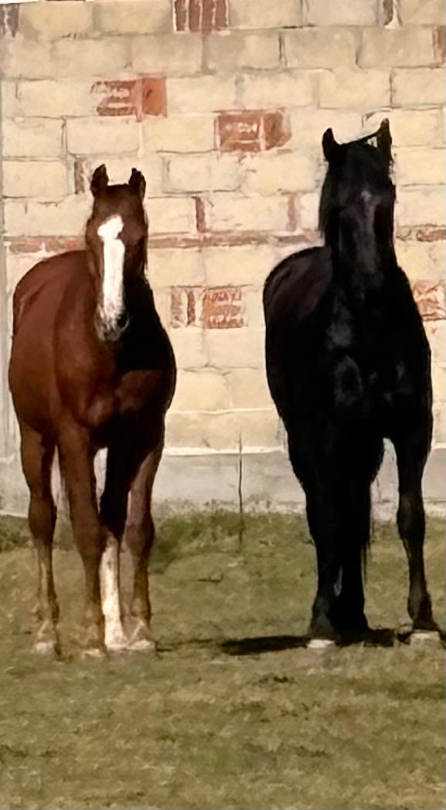
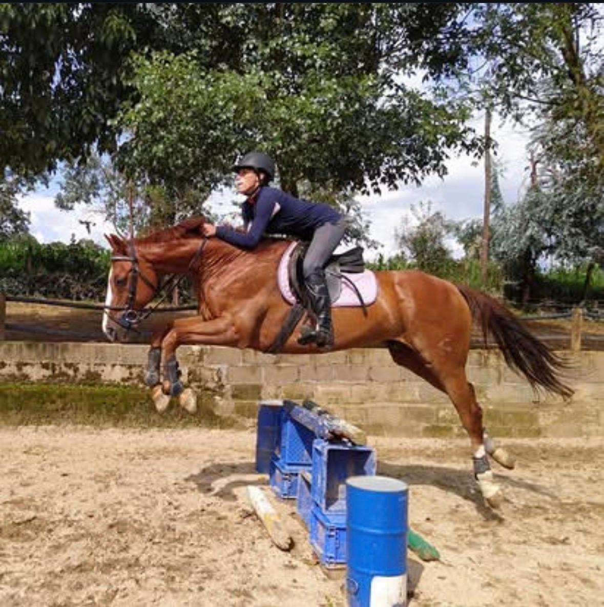

Rancho Faizy · Lerma, México
"We are not a commercial stable. We are a home."
Where It Began
Nestled in the highlands of Lerma, Estado de México, with the Sierra de las Cruces as a backdrop, Rancho Faizy was not built around a breeding program. It was built around a relationship.
This is not a facility. There are no production targets, no seasonal quotas, no commercial pressure. Just land, animals, and a philosophy that has guided every decision from day one: the horse's wellbeing comes before the human's timeline.
When Angel arrived at six months old in January 2024, this place became his home — not his workplace. That distinction shapes everything that happens here.

The Stallion
Angel arrived at Rancho Faizy at six months old — before he had been shaped by expectations, pressure, or routine. He grew up here. He learned here. His character was formed here, alongside the land and the animals that surround him.
By age two, Angel was demonstrating liberty lunging with body-cue direction changes — a milestone that typically takes years of careful, patient groundwork. When it came time for saddle introduction, he accepted it with zero resistance. No fight, no fear. He trusted the process because the process had always respected him.
He carries the KFPS Premium classification — the highest designation awarded by the Royal Friesian Studbook — earned not through shortcuts, but through the kind of development that only happens when a horse is truly allowed to grow.
How We Work
Four principles. Non-negotiable. They are not training methods — they are a commitment to the horse as a living being with its own intelligence, dignity, and will.
Angel is not stabled and pulled out for sessions. He lives with the land. Daily free movement — unscheduled, unstructured — is the foundation of everything else. A horse that moves freely thinks freely.
Formal sessions happen once a week — on Sundays. Deliberately. The goal is never to drill a behavior. It's to deepen a conversation. Quality of engagement matters far more than volume of repetition.
Angel's most important teacher has four legs. Pacho — our 12-year-old chestnut gelding and rescue horse — co-raised Angel from foal to stallion. Horses learn from horses. We follow that lead.
Not as an aspiration — as an absolute. Not a single session, interaction, or training decision at Rancho Faizy involves coercion. Angel's willingness is not managed. It is earned, preserved, and protected.
The Foundation
Pacho came to us as a rescue. A 12-year-old chestnut gelding with a history we had to piece together slowly — through patience, consistency, and time. It took two years to restore him. Two years of quiet mornings, of never asking too much, of learning to read the signals he gave when words were impossible.
When Angel arrived as a foal, we made a decision that defined everything that followed: we let Pacho raise him. Not as a supplement to human training, but as the primary social relationship in Angel's early life. Everything Angel knows about trust, he learned from Pacho first.
"Pacho is the soul of Rancho Faizy."

Looking Ahead
Angel's development is ongoing. We are committed to not shortcutting his training for commercial demand. When the time is right — and only then — breeding will open.
Angel's first breeding season is projected for 2027. Enquiries are welcome now — early conversations help us plan responsibly and ensure the right matches for both mare and stallion.
To register early interest or ask questions:
angelkfpsmx@gmail.com
Ready to Begin?
Breeding opens in 2027. If you have a mare you believe belongs in this lineage, we'd love to hear from you. Every great pairing starts with a conversation.
Express Interest